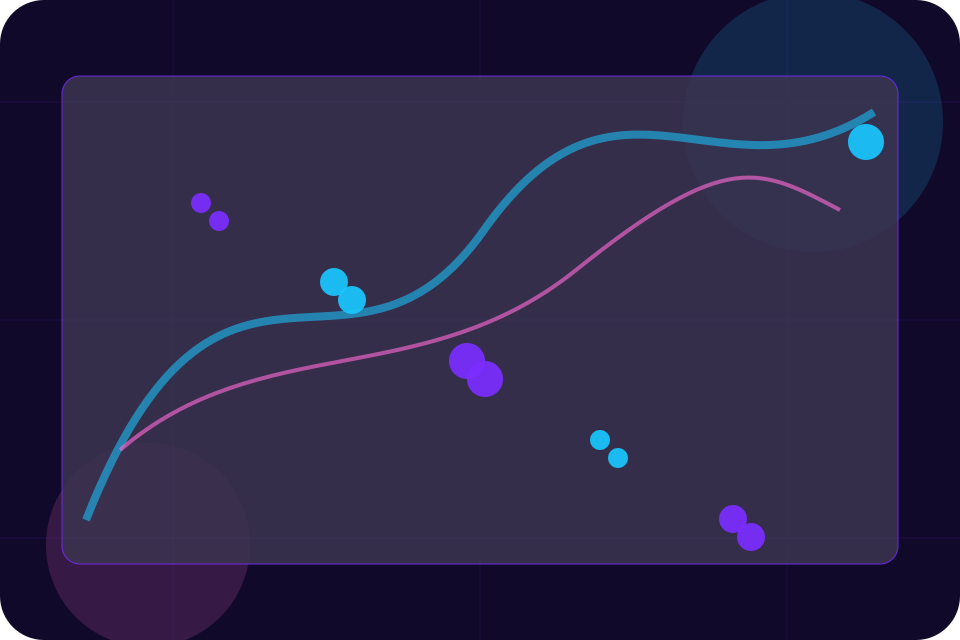
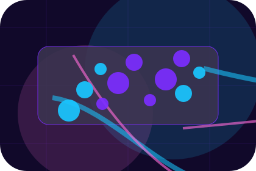
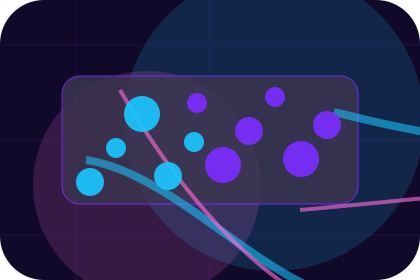
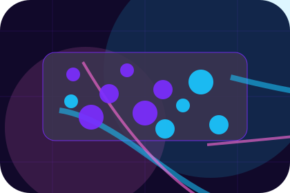
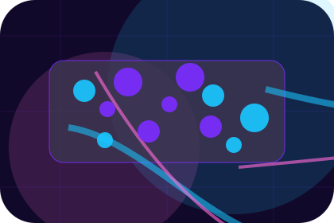
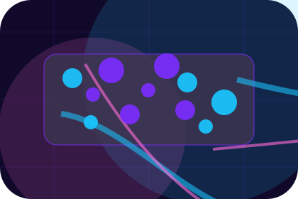
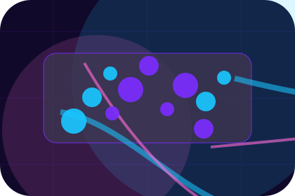
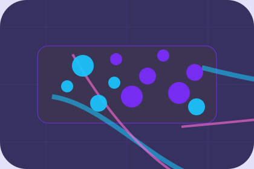

Guide
A useful entry point for visitors who need more context before they request an audit.
Insights / 01
Insights opens as a clear cybersecurity decision hub: what Cipher offers, who it helps, why it matters, and which route to take first.
The first screen combines positioning, proof, primary action, and fast internal navigation, so people can act immediately or compare the rest of the insights route with context.
Purple cloud-risk hero
Select the closest route and Cipher keeps the next step, proof, and follow-up expectation aligned with privacy and threat reduction.

Insights / 02
Threats gives researching visitors a practical route into guides, checklists, and comparison material without leaving the site structure.
Each resource behaves like a useful internal link, giving cold and warm visitors a way to learn, compare, and return to the action path.
Explore Insights

A useful entry point for visitors who need more context before they request an audit.
Insights / 03
Guides gives researching visitors a practical route into guides, checklists, and comparison material without leaving the site structure.
Each resource behaves like a useful internal link, giving cold and warm visitors a way to learn, compare, and return to the action path.
View ResourcesA useful entry point for visitors who need more context before they request an audit.
A scannable comparison aid that makes research usable before the next decision.
A route back to support, services, or contact when the visitor is ready to act.
A useful entry point for visitors who need more context before they request an audit.
Open resource
ChecklistA scannable comparison aid that makes research usable before the next decision.
Open resource
Response noteA route back to support, services, or contact when the visitor is ready to act.
Open resourceInsights / 04
Checklists gives researching visitors a practical route into guides, checklists, and comparison material without leaving the site structure.
Each resource behaves like a useful internal link, giving cold and warm visitors a way to learn, compare, and return to the action path.
Explore InsightsA useful entry point for visitors who need more context before they request an audit.
A scannable comparison aid that makes research usable before the next decision.
A route back to support, services, or contact when the visitor is ready to act.
Insights / 05
Privacy gives researching visitors a practical route into guides, checklists, and comparison material without leaving the site structure.
Each resource behaves like a useful internal link, giving cold and warm visitors a way to learn, compare, and return to the action path.
Explore InsightsCipher structures privacy around guide, checklist, and a clear next route so visitors can compare the block quickly before they request an audit.
Request AuditInsights / 07
Training explains the operating sequence so visitors can see how the first request becomes a clear recommendation and follow-up.
The steps are written from the visitor side: what they do first, what Cipher clarifies, what they receive, and how support continues.
Explore InsightsHow visitors begin this route and what detail is useful at the first step.
What Cipher reviews, filters, or explains before recommending the next move.

What the visitor receives afterward, including support, proof, or a handoff to the next page.
Insights / 08
Resources gives researching visitors a practical route into guides, checklists, and comparison material without leaving the site structure.
Each resource behaves like a useful internal link, giving cold and warm visitors a way to learn, compare, and return to the action path.
View ResourcesA useful entry point for visitors who need more context before they request an audit.
A scannable comparison aid that makes research usable before the next decision.
A route back to support, services, or contact when the visitor is ready to act.
A useful entry point for visitors who need more context before they request an audit.
Open resourceA scannable comparison aid that makes research usable before the next decision.
Open resource
Response noteA route back to support, services, or contact when the visitor is ready to act.
Open resourceInsights / 09
Alerts gives researching visitors a practical route into guides, checklists, and comparison material without leaving the site structure.
Each resource behaves like a useful internal link, giving cold and warm visitors a way to learn, compare, and return to the action path.
Explore InsightsA useful entry point for visitors who need more context before they request an audit.
A scannable comparison aid that makes research usable before the next decision.
A route back to support, services, or contact when the visitor is ready to act.
Insights / 10
Cipher closes the insights route with a clear action, a quick reminder of the value, and a low-friction way to request an audit.
Visitors who are ready can use the primary action. Visitors who are still comparing can scan the section links, proof, and support routes before they request an audit.
Request AuditThe final block keeps the choice simple: act now, compare one more proof route, or send enough detail for a focused response.
Request Auditprivacy and threat reduction
A cloud-risk command site with neon topology, rounded security modules, compliance proof, and audit routing. Insights ends with a direct path to request an audit, plus enough context for visitors who still need to compare.

Request AuditInformation is provided for planning and should be reviewed for the final client, location, and operating rules.